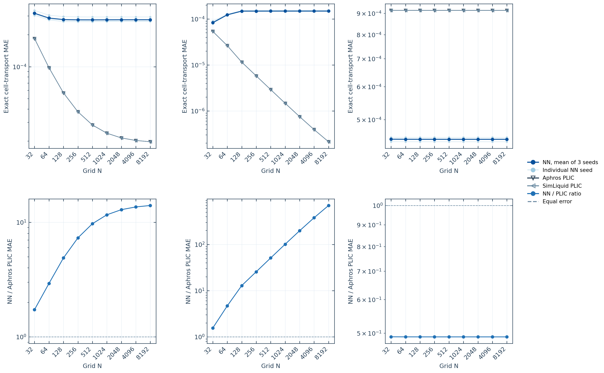
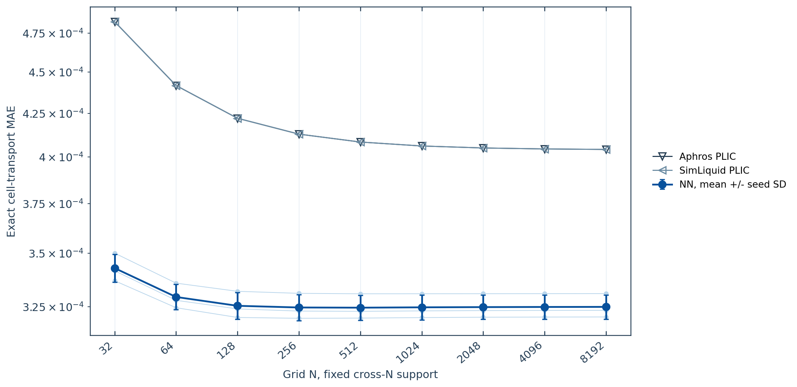
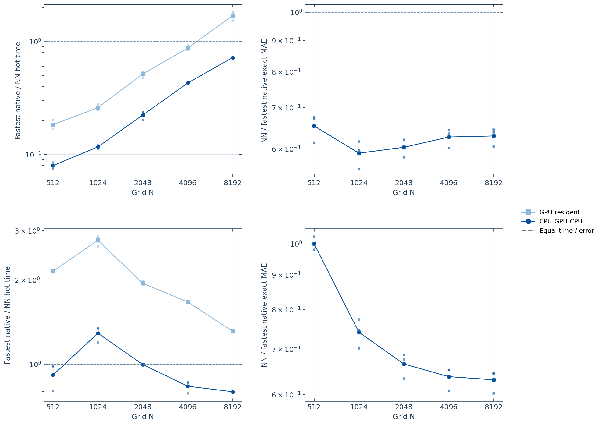

神经输入仅为VOF体积分数与Courant数；曲率诊断仅用VOF。没有冻结平面SVD层、外部几何特征、几何修正或回退。解析几何仅离线提供真值。最终冻结模型、三个随机种子、FP32精度、CUDA Graph与适配器在新测试前锁定，未根据测试换权重或推理方法。
时间口径：共享GPU负载下实测。按用户授权直接与外部GPU任务并行，全部120个配置均保留。本轮数据有效，逐案比较全部三个随机种子与实际最快CPU；外部负载记录随结果保存，时间结论对应实测共享负载，未宣称独占GPU或排除共享波动。
主误差为 |原始float32中心体积分数×预测通量比−精确扫掠面积| 的均值，不乘h²。下表N8192已100%解析，负结果不能用三形状总体平均掩盖。
| 形状 | NN MAE均值 ± 标准差 | Aphros PLIC MAE | NN/PLIC误差倍数 | 解析样本 | 解析覆盖 |
|---|---|---|---|---|---|
| 圆 | 0.0002765 ± 1.48e-05 | 1.972e-05 | 14.02 | 576 | 100% |
| 椭圆 | 0.0001491 ± 4.62e-06 | 2.136e-07 | 698.1 | 576 | 100% |
| 弱正弦 | 0.0004486 ± 5.52e-06 | 0.000915 | 0.4903 | 576 | 100% |
| 解析半径 | 独立查询 | NN精确MAE ± 标准差 | Aphros PLIC精确MAE | 三个随机种子均达精度 |
|---|---|---|---|---|
| 4≤R/h<8 | 5032 | 0.000771 ± 1.62e-05 | 0.0008002 | 是 |
| 8≤R/h<32 | 9107 | 0.0004854 ± 4.45e-06 | 0.0006875 | 是 |
| 32≤R/h<128 | 9050 | 0.0004168 ± 4.93e-07 | 0.0006652 | 是 |
| 128≤R/h≤512 | 9579 | 0.0004016 ± 2.39e-06 | 0.0006636 | 是 |


| N | 固定共同查询 | NN精确MAE ± 标准差 | Aphros PLIC精确MAE | SimLiquid PLIC精确MAE |
|---|---|---|---|---|
| 32 | 1332 | 0.0003429 ± 6.67e-06 | 0.0004826 | 0.0004826 |
| 64 | 1332 | 0.0003295 ± 5.78e-06 | 0.0004417 | 0.0004417 |
| 128 | 1332 | 0.0003254 ± 6.03e-06 | 0.0004221 | 0.0004221 |
| 256 | 1332 | 0.0003247 ± 5.80e-06 | 0.0004129 | 0.0004129 |
| 512 | 1332 | 0.0003246 ± 5.66e-06 | 0.0004084 | 0.0004084 |
| 1024 | 1332 | 0.0003248 ± 5.55e-06 | 0.0004062 | 0.0004062 |
| 2048 | 1332 | 0.0003249 ± 5.48e-06 | 0.0004051 | 0.0004051 |
| 4096 | 1332 | 0.0003249 ± 5.45e-06 | 0.0004045 | 0.0004045 |
| 8192 | 1332 | 0.000325 ± 5.44e-06 | 0.0004042 | 0.0004042 |
| N | 主解析查询 | 全部原始查询 | 主解析覆盖 | 共同解析查询 | 预测失败合计 |
|---|---|---|---|---|---|
| 32 | 1332 | 1728 | 77.08% | 1332 | 0 |
| 64 | 1548 | 1728 | 89.58% | 1332 | 0 |
| 128 | 1728 | 1728 | 100% | 1332 | 0 |
| 256 | 1728 | 1728 | 100% | 1332 | 0 |
| 512 | 1728 | 1728 | 100% | 1332 | 0 |
| 1024 | 1728 | 1728 | 100% | 1332 | 0 |
| 2048 | 1728 | 1728 | 100% | 1332 | 0 |
| 4096 | 1728 | 1728 | 100% | 1332 | 0 |
| 8192 | 1728 | 1728 | 100% | 1332 | 0 |
每场为新种子生成的真实完整VOF场，包含全部实际界面查询，不复制验证样本。CPU保留两套PLIC各1／4／8线程，逐案取实际最快者；GPU三个随机种子全保留。驻留与含H2D／D2H的往返分开测量，均同步到完成输出；不含压力／推进／可视化。
初轮在预热后同步查询硬件状态，留下未计时的空隙，部分工作负载在测量前降频，热调用准备条件不一致。修订在重测前登记：先启动监控，CPU与GPU都连续完成至少10次且持续至少0.5秒的预热，随后立即测量31次；预热与测量之间没有同步硬件查询、文件写入或模型准备。计算线程使用逻辑核0至7、GPU主线程使用逻辑核8，异步监控线程固定在逻辑核9。用户授权直接与外部GPU任务并行运行，不再等待空闲，也不因外部任务而丢弃测量。
修订轮完整120点是唯一主计时依据，无论结果好坏；初轮全部记录保留，下表仅诊断方法差异，不在两轮间取较小时间。共享GPU外部负载及时间波动均记录，GPU时钟未锁定；这些是该共享负载条件下的有效实测，并非独占GPU证据。原始波动和失败尝试均保留；本次完整修正后停止，不继续为结果重测。
| 场景 | N | 边界 | 初轮NN ms ± 标准差 | 修订轮NN ms ± 标准差 | 初轮最快CPU ms | 修订轮最快CPU ms |
|---|---|---|---|---|---|---|
| single_drop | 512 | GPU驻留 | 0.06625 ± 0.0155 | 0.05675 ± 0.00518 | 0.01107 | 0.01039 |
| single_drop | 512 | CPU→GPU→CPU | 0.1396 ± 0.00527 | 0.1308 ± 0.00864 | 0.01107 | 0.01039 |
| single_drop | 1024 | GPU驻留 | 0.06567 ± 0.00353 | 0.06712 ± 0.0038 | 0.03612 | 0.01742 |
| single_drop | 1024 | CPU→GPU→CPU | 0.1852 ± 0.0618 | 0.1495 ± 0.00556 | 0.03612 | 0.01742 |
| single_drop | 2048 | GPU驻留 | 0.06912 ± 0.00673 | 0.06046 ± 0.00406 | 0.03772 | 0.03119 |
| single_drop | 2048 | CPU→GPU→CPU | 0.2651 ± 0.105 | 0.1397 ± 0.0132 | 0.03772 | 0.03119 |
| single_drop | 4096 | GPU驻留 | 0.07608 ± 0.0107 | 0.07564 ± 0.00351 | 0.07881 | 0.06607 |
| single_drop | 4096 | CPU→GPU→CPU | 0.1753 ± 0.0145 | 0.1538 ± 0.00191 | 0.07881 | 0.06607 |
| single_drop | 8192 | GPU驻留 | 0.07858 ± 0.00454 | 0.08255 ± 0.0074 | 0.1682 | 0.14 |
| single_drop | 8192 | CPU→GPU→CPU | 0.2551 ± 0.121 | 0.1944 ± 0.00281 | 0.1682 | 0.14 |
| many_drops | 512 | GPU驻留 | 0.08798 ± 0.00349 | 0.08094 ± 0.000525 | 0.2312 | 0.1739 |
| many_drops | 512 | CPU→GPU→CPU | 0.3622 ± 0.272 | 0.1902 ± 0.0227 | 0.2312 | 0.1739 |
| many_drops | 1024 | GPU驻留 | 0.126 ± 0.000109 | 0.115 ± 0.00519 | 0.3398 | 0.3188 |
| many_drops | 1024 | CPU→GPU→CPU | 0.2499 ± 0.00588 | 0.2469 ± 0.0168 | 0.3398 | 0.3188 |
| many_drops | 2048 | GPU驻留 | 0.1887 ± 0.00682 | 0.1888 ± 0.00268 | 0.4856 | 0.3673 |
| many_drops | 2048 | CPU→GPU→CPU | 0.9724 ± 0.989 | 0.3682 ± 0.00242 | 0.4856 | 0.3673 |
| many_drops | 4096 | GPU驻留 | 0.386 ± 0.0917 | 0.3434 ± 0.000993 | 0.8868 | 0.5733 |
| many_drops | 4096 | CPU→GPU→CPU | 0.6909 ± 0.0964 | 0.6869 ± 0.0357 | 0.8868 | 0.5733 |
| many_drops | 8192 | GPU驻留 | 1.305 ± 0.364 | 0.8662 ± 0.00475 | 1.457 | 1.135 |
| many_drops | 8192 | CPU→GPU→CPU | 1.867 ± 0.352 | 1.423 ± 0.0138 | 1.457 | 1.135 |

| 真实场景 | N | 实际查询 | 边界 | NN热调用ms ± 标准差 | 最快CPU ms | 实际原生参考 | NN精确MAE ± 标准差 | 原生精确MAE | 三种子均精度／时间达标 |
|---|---|---|---|---|---|---|---|---|---|
| single_drop | 512 | 881 | GPU驻留 | 0.05675 ± 0.00518 | 0.01039 | aphros / 1线程 | 0.0005559 ± 2.93e-05 | 0.0008501 | 未达，保留 |
| single_drop | 512 | 881 | CPU→GPU→CPU | 0.1308 ± 0.00864 | 0.01039 | aphros / 1线程 | 0.0005559 ± 2.93e-05 | 0.0008501 | 未达，保留 |
| single_drop | 1024 | 1746 | GPU驻留 | 0.06712 ± 0.0038 | 0.01742 | aphros / 1线程 | 0.0005098 ± 2.67e-05 | 0.0008634 | 未达，保留 |
| single_drop | 1024 | 1746 | CPU→GPU→CPU | 0.1495 ± 0.00556 | 0.01742 | aphros / 1线程 | 0.0005098 ± 2.67e-05 | 0.0008634 | 未达，保留 |
| single_drop | 2048 | 3460 | GPU驻留 | 0.06046 ± 0.00406 | 0.03119 | aphros / 1线程 | 0.0005266 ± 1.74e-05 | 0.0008726 | 未达，保留 |
| single_drop | 2048 | 3460 | CPU→GPU→CPU | 0.1397 ± 0.0132 | 0.03119 | aphros / 1线程 | 0.0005266 ± 1.74e-05 | 0.0008726 | 未达，保留 |
| single_drop | 4096 | 6985 | GPU驻留 | 0.07564 ± 0.00351 | 0.06607 | aphros / 1线程 | 0.0005304 ± 1.89e-05 | 0.0008457 | 未达，保留 |
| single_drop | 4096 | 6985 | CPU→GPU→CPU | 0.1538 ± 0.00191 | 0.06607 | aphros / 1线程 | 0.0005304 ± 1.89e-05 | 0.0008457 | 未达，保留 |
| single_drop | 8192 | 13990 | GPU驻留 | 0.08255 ± 0.0074 | 0.14 | aphros / 1线程 | 0.0005296 ± 1.76e-05 | 0.000841 | 全部达标 |
| single_drop | 8192 | 13990 | CPU→GPU→CPU | 0.1944 ± 0.00281 | 0.14 | aphros / 1线程 | 0.0005296 ± 1.76e-05 | 0.000841 | 未达，保留 |
| many_drops | 512 | 15790 | GPU驻留 | 0.08094 ± 0.000525 | 0.1739 | aphros / 4线程 | 0.0007154 ± 1.62e-05 | 0.0007152 | 未达，保留 |
| many_drops | 512 | 15790 | CPU→GPU→CPU | 0.1902 ± 0.0227 | 0.1739 | aphros / 4线程 | 0.0007154 ± 1.62e-05 | 0.0007152 | 未达，保留 |
| many_drops | 1024 | 31678 | GPU驻留 | 0.115 ± 0.00519 | 0.3188 | simliquid / 4线程 | 0.0006018 ± 2.95e-05 | 0.0008122 | 全部达标 |
| many_drops | 1024 | 31678 | CPU→GPU→CPU | 0.2469 ± 0.0168 | 0.3188 | simliquid / 4线程 | 0.0006018 ± 2.95e-05 | 0.0008122 | 全部达标 |
| many_drops | 2048 | 63404 | GPU驻留 | 0.1888 ± 0.00268 | 0.3673 | aphros / 4线程 | 0.0005594 ± 2.36e-05 | 0.0008408 | 全部达标 |
| many_drops | 2048 | 63404 | CPU→GPU→CPU | 0.3682 ± 0.00242 | 0.3673 | aphros / 4线程 | 0.0005594 ± 2.36e-05 | 0.0008408 | 未达，保留 |
| many_drops | 4096 | 126956 | GPU驻留 | 0.3434 ± 0.000993 | 0.5733 | aphros / 8线程 | 0.0005402 ± 2.17e-05 | 0.0008475 | 全部达标 |
| many_drops | 4096 | 126956 | CPU→GPU→CPU | 0.6869 ± 0.0357 | 0.5733 | aphros / 8线程 | 0.0005402 ± 2.17e-05 | 0.0008475 | 未达，保留 |
| many_drops | 8192 | 253714 | GPU驻留 | 0.8662 ± 0.00475 | 1.135 | aphros / 8线程 | 0.0005363 ± 2.07e-05 | 0.0008505 | 全部达标 |
| many_drops | 8192 | 253714 | CPU→GPU→CPU | 1.423 ± 0.0138 | 1.135 | aphros / 8线程 | 0.0005363 ± 2.07e-05 | 0.0008505 | 未达，保留 |
| 场景 | N | 实际查询 | 原生实现 | CPU线程 | 精确MAE | 热调用ms中位数 | P05 ms | P95 ms | 覆盖率 |
|---|---|---|---|---|---|---|---|---|---|
| many_drops | 4096 | 1.270e+05 | simliquid | 8 | 0.0008475 | 0.9709 | 0.9286 | 1.282 | 1 |
| single_drop | 512 | 881 | simliquid | 1 | 0.0008501 | 0.02032 | 0.02018 | 0.02377 | 1 |
| single_drop | 512 | 881 | aphros | 1 | 0.0008501 | 0.01039 | 0.01027 | 0.01111 | 1 |
| single_drop | 4096 | 6985 | simliquid | 4 | 0.0008457 | 0.1778 | 0.1393 | 0.2142 | 1 |
| single_drop | 2048 | 3460 | simliquid | 4 | 0.0008726 | 0.1717 | 0.1118 | 0.2995 | 1 |
| single_drop | 512 | 881 | simliquid | 8 | 0.0008501 | 0.1975 | 0.1547 | 0.2461 | 1 |
| many_drops | 1024 | 3.168e+04 | aphros | 1 | 0.0008122 | 0.4548 | 0.4407 | 0.5387 | 1 |
| single_drop | 1024 | 1746 | simliquid | 1 | 0.0008634 | 0.0421 | 0.04175 | 0.05192 | 1 |
| many_drops | 8192 | 2.537e+05 | simliquid | 1 | 0.0008505 | 10.31 | 10.11 | 10.63 | 1 |
| single_drop | 4096 | 6985 | aphros | 8 | 0.0008457 | 0.2905 | 0.2363 | 0.36 | 1 |
| many_drops | 512 | 1.579e+04 | aphros | 8 | 0.0007152 | 0.3453 | 0.2761 | 0.4326 | 1 |
| many_drops | 8192 | 2.537e+05 | aphros | 8 | 0.0008505 | 1.135 | 1.091 | 1.426 | 1 |
| many_drops | 512 | 1.579e+04 | simliquid | 4 | 0.0007152 | 0.2042 | 0.1925 | 0.2386 | 1 |
| many_drops | 512 | 1.579e+04 | simliquid | 8 | 0.0007152 | 0.3417 | 0.2754 | 0.3945 | 1 |
| many_drops | 512 | 1.579e+04 | aphros | 4 | 0.0007152 | 0.1739 | 0.1527 | 0.2244 | 1 |
| single_drop | 8192 | 1.399e+04 | simliquid | 4 | 0.000841 | 0.1897 | 0.1713 | 0.2447 | 1 |
| many_drops | 8192 | 2.537e+05 | aphros | 4 | 0.0008505 | 1.693 | 1.601 | 1.923 | 1 |
| single_drop | 4096 | 6985 | simliquid | 1 | 0.0008457 | 0.1459 | 0.1438 | 0.1792 | 1 |
| many_drops | 2048 | 6.34e+04 | simliquid | 1 | 0.0008408 | 1.715 | 1.643 | 2.158 | 1 |
| single_drop | 8192 | 1.399e+04 | aphros | 1 | 0.000841 | 0.14 | 0.1395 | 0.1547 | 1 |
| many_drops | 2048 | 6.34e+04 | aphros | 4 | 0.0008408 | 0.3673 | 0.3321 | 0.5059 | 1 |
| single_drop | 1024 | 1746 | aphros | 1 | 0.0008634 | 0.01742 | 0.01731 | 0.01836 | 1 |
| single_drop | 2048 | 3460 | aphros | 4 | 0.0008726 | 0.1504 | 0.1233 | 0.1865 | 1 |
| single_drop | 4096 | 6985 | aphros | 1 | 0.0008457 | 0.06607 | 0.06507 | 0.0713 | 1 |
| single_drop | 1024 | 1746 | simliquid | 4 | 0.0008634 | 0.1723 | 0.1173 | 0.2237 | 1 |
| many_drops | 8192 | 2.537e+05 | aphros | 1 | 0.0008505 | 5.487 | 5.307 | 5.899 | 1 |
| many_drops | 4096 | 1.270e+05 | simliquid | 1 | 0.0008475 | 4.505 | 4.298 | 4.704 | 1 |
| many_drops | 4096 | 1.270e+05 | aphros | 1 | 0.0008475 | 2.408 | 2.317 | 2.731 | 1 |
| single_drop | 1024 | 1746 | simliquid | 8 | 0.0008634 | 0.2187 | 0.1687 | 0.2538 | 1 |
| many_drops | 8192 | 2.537e+05 | simliquid | 4 | 0.0008505 | 3.003 | 2.656 | 3.59 | 1 |
| single_drop | 512 | 881 | simliquid | 4 | 0.0008501 | 0.1334 | 0.08567 | 0.1745 | 1 |
| single_drop | 4096 | 6985 | simliquid | 8 | 0.0008457 | 0.341 | 0.2429 | 0.3855 | 1 |
| many_drops | 1024 | 3.168e+04 | simliquid | 8 | 0.0008122 | 0.399 | 0.3539 | 0.5071 | 1 |
| many_drops | 2048 | 6.34e+04 | aphros | 8 | 0.0008408 | 0.4065 | 0.3511 | 0.4846 | 1 |
| many_drops | 1024 | 3.168e+04 | aphros | 8 | 0.0008122 | 0.3454 | 0.2801 | 0.4556 | 1 |
| many_drops | 1024 | 3.168e+04 | simliquid | 4 | 0.0008122 | 0.3188 | 0.3018 | 0.4093 | 1 |
| many_drops | 4096 | 1.270e+05 | simliquid | 4 | 0.0008475 | 1.363 | 1.227 | 1.714 | 1 |
| many_drops | 512 | 1.579e+04 | aphros | 1 | 0.0007152 | 0.2065 | 0.2009 | 0.2237 | 1 |
| single_drop | 512 | 881 | aphros | 4 | 0.0008501 | 0.1067 | 0.06836 | 0.1496 | 1 |
| single_drop | 1024 | 1746 | aphros | 8 | 0.0008634 | 0.1929 | 0.1615 | 0.2551 | 1 |
| single_drop | 4096 | 6985 | aphros | 4 | 0.0008457 | 0.1999 | 0.1619 | 0.2505 | 1 |
| many_drops | 1024 | 3.168e+04 | simliquid | 1 | 0.0008122 | 0.7833 | 0.765 | 0.8656 | 1 |
| many_drops | 2048 | 6.34e+04 | simliquid | 4 | 0.0008408 | 0.5875 | 0.522 | 0.7314 | 1 |
| single_drop | 512 | 881 | aphros | 8 | 0.0008501 | 0.181 | 0.1391 | 0.2085 | 1 |
| single_drop | 2048 | 3460 | simliquid | 8 | 0.0008726 | 0.2925 | 0.2319 | 0.3443 | 1 |
| many_drops | 2048 | 6.34e+04 | simliquid | 8 | 0.0008408 | 0.4998 | 0.4682 | 0.7098 | 1 |
| many_drops | 4096 | 1.270e+05 | aphros | 8 | 0.0008475 | 0.5733 | 0.4918 | 0.7363 | 1 |
| single_drop | 8192 | 1.399e+04 | aphros | 8 | 0.000841 | 0.3552 | 0.2785 | 0.405 | 1 |
| single_drop | 8192 | 1.399e+04 | simliquid | 1 | 0.000841 | 0.3099 | 0.2996 | 0.3258 | 1 |
| many_drops | 4096 | 1.270e+05 | aphros | 4 | 0.0008475 | 0.7368 | 0.6918 | 0.8609 | 1 |
| single_drop | 2048 | 3460 | simliquid | 1 | 0.0008726 | 0.07463 | 0.07324 | 0.1349 | 1 |
| single_drop | 2048 | 3460 | aphros | 1 | 0.0008726 | 0.03119 | 0.03085 | 0.03437 | 1 |
| single_drop | 8192 | 1.399e+04 | aphros | 4 | 0.000841 | 0.1814 | 0.1482 | 0.2082 | 1 |
| many_drops | 1024 | 3.168e+04 | aphros | 4 | 0.0008122 | 0.3667 | 0.315 | 0.4191 | 1 |
| single_drop | 1024 | 1746 | aphros | 4 | 0.0008634 | 0.1235 | 0.08587 | 0.185 | 1 |
| many_drops | 2048 | 6.34e+04 | aphros | 1 | 0.0008408 | 0.9218 | 0.8925 | 1.012 | 1 |
| many_drops | 8192 | 2.537e+05 | simliquid | 8 | 0.0008505 | 1.988 | 1.929 | 2.567 | 1 |
| single_drop | 2048 | 3460 | aphros | 8 | 0.0008726 | 0.2229 | 0.1709 | 0.2757 | 1 |
| many_drops | 512 | 1.579e+04 | simliquid | 1 | 0.0007152 | 0.3896 | 0.3789 | 0.4035 | 1 |
| single_drop | 8192 | 1.399e+04 | simliquid | 8 | 0.000841 | 0.3319 | 0.2805 | 0.4136 | 1 |
| 场景 | N | 实际查询 | 随机种子 | 边界 | 精确MAE | 热调用ms中位数 | P05 ms | P95 ms | 覆盖率 |
|---|---|---|---|---|---|---|---|---|---|
| single_drop | 4096 | 6985 | 4103 | GPU驻留 | 0.0005379 | 0.07755 | 0.07586 | 0.08316 | 1 |
| many_drops | 8192 | 2.537e+05 | 4102 | GPU驻留 | 0.0005485 | 0.8667 | 0.8552 | 0.9928 | 1 |
| many_drops | 1024 | 3.168e+04 | 4102 | CPU→GPU→CPU | 0.0006069 | 0.2372 | 0.2342 | 0.2868 | 1 |
| single_drop | 1024 | 1746 | 4101 | GPU驻留 | 0.0004804 | 0.06927 | 0.05627 | 0.2175 | 1 |
| single_drop | 1024 | 1746 | 4103 | GPU驻留 | 0.0005162 | 0.06936 | 0.0664 | 0.1362 | 1 |
| many_drops | 8192 | 2.537e+05 | 4102 | CPU→GPU→CPU | 0.0005485 | 1.422 | 1.393 | 1.509 | 1 |
| many_drops | 512 | 1.579e+04 | 4101 | CPU→GPU→CPU | 0.0007122 | 0.1762 | 0.1743 | 0.1875 | 1 |
| single_drop | 8192 | 1.399e+04 | 4101 | GPU驻留 | 0.0005095 | 0.07702 | 0.07441 | 0.08238 | 1 |
| single_drop | 512 | 881 | 4102 | GPU驻留 | 0.0005712 | 0.05691 | 0.05055 | 0.1258 | 1 |
| many_drops | 2048 | 6.34e+04 | 4103 | GPU驻留 | 0.0005773 | 0.1903 | 0.1746 | 0.409 | 1 |
| many_drops | 4096 | 1.270e+05 | 4101 | CPU→GPU→CPU | 0.0005151 | 0.6642 | 0.6397 | 0.7337 | 1 |
| many_drops | 1024 | 3.168e+04 | 4101 | GPU驻留 | 0.00057 | 0.1114 | 0.1088 | 0.1383 | 1 |
| single_drop | 512 | 881 | 4103 | CPU→GPU→CPU | 0.0005743 | 0.1295 | 0.1219 | 0.1371 | 1 |
| many_drops | 4096 | 1.270e+05 | 4101 | GPU驻留 | 0.0005151 | 0.3423 | 0.3316 | 0.3614 | 1 |
| single_drop | 2048 | 3460 | 4101 | GPU驻留 | 0.0005077 | 0.0581 | 0.05715 | 0.07439 | 1 |
| single_drop | 8192 | 1.399e+04 | 4102 | CPU→GPU→CPU | 0.0005422 | 0.1911 | 0.1708 | 3.899 | 1 |
| many_drops | 4096 | 1.270e+05 | 4103 | CPU→GPU→CPU | 0.0005527 | 0.728 | 0.6897 | 0.7843 | 1 |
| single_drop | 1024 | 1746 | 4102 | GPU驻留 | 0.0005327 | 0.06274 | 0.06137 | 0.09719 | 1 |
| single_drop | 4096 | 6985 | 4101 | GPU驻留 | 0.0005089 | 0.07159 | 0.06989 | 0.07889 | 1 |
| single_drop | 1024 | 1746 | 4101 | CPU→GPU→CPU | 0.0004804 | 0.148 | 0.1459 | 0.1619 | 1 |
| single_drop | 2048 | 3460 | 4102 | GPU驻留 | 0.000542 | 0.05812 | 0.05781 | 0.06787 | 1 |
| many_drops | 1024 | 3.168e+04 | 4102 | GPU驻留 | 0.0006069 | 0.121 | 0.1163 | 0.1278 | 1 |
| many_drops | 4096 | 1.270e+05 | 4102 | CPU→GPU→CPU | 0.0005528 | 0.6684 | 0.6344 | 0.6816 | 1 |
| single_drop | 512 | 881 | 4102 | CPU→GPU→CPU | 0.0005712 | 0.1229 | 0.1217 | 0.1309 | 1 |
| many_drops | 2048 | 6.34e+04 | 4101 | CPU→GPU→CPU | 0.0005326 | 0.3657 | 0.3466 | 0.5538 | 1 |
| single_drop | 4096 | 6985 | 4102 | GPU驻留 | 0.0005443 | 0.07779 | 0.07596 | 0.08827 | 1 |
| single_drop | 512 | 881 | 4101 | CPU→GPU→CPU | 0.0005222 | 0.14 | 0.138 | 0.1523 | 1 |
| many_drops | 8192 | 2.537e+05 | 4103 | CPU→GPU→CPU | 0.0005479 | 1.41 | 1.401 | 1.504 | 1 |
| many_drops | 512 | 1.579e+04 | 4103 | CPU→GPU→CPU | 0.0007329 | 0.178 | 0.1753 | 0.1951 | 1 |
| single_drop | 1024 | 1746 | 4102 | CPU→GPU→CPU | 0.0005327 | 0.1449 | 0.1358 | 0.2173 | 1 |
| many_drops | 8192 | 2.537e+05 | 4103 | GPU驻留 | 0.0005479 | 0.8612 | 0.8516 | 0.8957 | 1 |
| single_drop | 8192 | 1.399e+04 | 4103 | CPU→GPU→CPU | 0.0005372 | 0.1962 | 0.1898 | 0.2364 | 1 |
| many_drops | 512 | 1.579e+04 | 4103 | GPU驻留 | 0.0007329 | 0.08067 | 0.07966 | 0.08683 | 1 |
| many_drops | 512 | 1.579e+04 | 4102 | GPU驻留 | 0.000701 | 0.0806 | 0.07867 | 0.1848 | 1 |
| many_drops | 2048 | 6.34e+04 | 4101 | GPU驻留 | 0.0005326 | 0.1903 | 0.1758 | 0.3206 | 1 |
| many_drops | 1024 | 3.168e+04 | 4103 | GPU驻留 | 0.0006284 | 0.1127 | 0.1098 | 0.1311 | 1 |
| many_drops | 2048 | 6.34e+04 | 4103 | CPU→GPU→CPU | 0.0005773 | 0.3706 | 0.3623 | 0.4367 | 1 |
| many_drops | 1024 | 3.168e+04 | 4103 | CPU→GPU→CPU | 0.0006284 | 0.2662 | 0.2562 | 0.3341 | 1 |
| single_drop | 8192 | 1.399e+04 | 4101 | CPU→GPU→CPU | 0.0005095 | 0.1958 | 0.1891 | 0.3878 | 1 |
| single_drop | 512 | 881 | 4103 | GPU驻留 | 0.0005743 | 0.06185 | 0.0609 | 0.06859 | 1 |
| many_drops | 512 | 1.579e+04 | 4102 | CPU→GPU→CPU | 0.000701 | 0.2164 | 0.193 | 0.234 | 1 |
| single_drop | 512 | 881 | 4101 | GPU驻留 | 0.0005222 | 0.0515 | 0.0487 | 0.06157 | 1 |
| single_drop | 2048 | 3460 | 4102 | CPU→GPU→CPU | 0.000542 | 0.155 | 0.1363 | 0.2784 | 1 |
| single_drop | 2048 | 3460 | 4103 | CPU→GPU→CPU | 0.00053 | 0.1315 | 0.1303 | 0.2131 | 1 |
| many_drops | 4096 | 1.270e+05 | 4103 | GPU驻留 | 0.0005527 | 0.3443 | 0.3361 | 0.3552 | 1 |
| single_drop | 2048 | 3460 | 4101 | CPU→GPU→CPU | 0.0005077 | 0.1327 | 0.1306 | 0.139 | 1 |
| single_drop | 1024 | 1746 | 4103 | CPU→GPU→CPU | 0.0005162 | 0.1557 | 0.1377 | 0.2025 | 1 |
| single_drop | 8192 | 1.399e+04 | 4103 | GPU驻留 | 0.0005372 | 0.09096 | 0.08032 | 0.237 | 1 |
| many_drops | 512 | 1.579e+04 | 4101 | GPU驻留 | 0.0007122 | 0.08154 | 0.07965 | 0.08739 | 1 |
| single_drop | 4096 | 6985 | 4102 | CPU→GPU→CPU | 0.0005443 | 0.1528 | 0.147 | 0.231 | 1 |
| many_drops | 4096 | 1.270e+05 | 4102 | GPU驻留 | 0.0005528 | 0.3436 | 0.3343 | 0.4641 | 1 |
| many_drops | 2048 | 6.34e+04 | 4102 | GPU驻留 | 0.0005682 | 0.1857 | 0.1754 | 0.2009 | 1 |
| many_drops | 2048 | 6.34e+04 | 4102 | CPU→GPU→CPU | 0.0005682 | 0.3684 | 0.3613 | 0.5037 | 1 |
| single_drop | 4096 | 6985 | 4101 | CPU→GPU→CPU | 0.0005089 | 0.156 | 0.1506 | 0.1709 | 1 |
| single_drop | 8192 | 1.399e+04 | 4102 | GPU驻留 | 0.0005422 | 0.07968 | 0.07847 | 0.09062 | 1 |
| single_drop | 2048 | 3460 | 4103 | GPU驻留 | 0.00053 | 0.06515 | 0.05865 | 0.212 | 1 |
| many_drops | 8192 | 2.537e+05 | 4101 | CPU→GPU→CPU | 0.0005123 | 1.438 | 1.401 | 1.486 | 1 |
| single_drop | 4096 | 6985 | 4103 | CPU→GPU→CPU | 0.0005379 | 0.1527 | 0.148 | 0.162 | 1 |
| many_drops | 1024 | 3.168e+04 | 4101 | CPU→GPU→CPU | 0.00057 | 0.2371 | 0.2337 | 0.3265 | 1 |
| many_drops | 8192 | 2.537e+05 | 4101 | GPU驻留 | 0.0005123 | 0.8707 | 0.8577 | 0.9806 | 1 |
神经组时间均值与标准差来自三个随机种子的各31次调用中位数；表内P05／P95来自各自真实调用分布。它们与随机种子间标准差分开，不当作同一个不确定度。
formal_native_points.csvformal_neural_seed_points.csvCUDA Graph的热时延仅适用于已捕获的实际查询数。不同批量必须重新捕获；相同形状的新输入仍需按对应边界更新输入。capture_seconds按实现实际记录12次普通预热与图捕获，不计入热调用；它未包含此前的模型加载与缓冲分配。另列cold_load_and_capture_seconds，覆盖这次完整适配器构造，包括加载、缓冲和捕获；它也不是从原始磁盘数据开始的完整PDE首次步。仅当同一案本轮精度与时间全部达标时，分别列ceil(对应初始化秒数×1000／(CPU毫秒−NN热调用毫秒))，只摊销所标明的实测初始化段。
| 场景 | N | 边界 | 随机种子 | 12次预热＋捕获秒 | 完整适配器构造秒 | 预热捕获段复用次数 | 完整构造段复用次数 |
|---|---|---|---|---|---|---|---|
| single_drop | 512 | GPU驻留 | 4102 | 0.1216 | 0.1369 | 未同时达标 | 未同时达标 |
| single_drop | 512 | GPU驻留 | 4103 | 0.1046 | 0.1245 | 未同时达标 | 未同时达标 |
| single_drop | 512 | GPU驻留 | 4101 | 0.1175 | 0.1347 | 未同时达标 | 未同时达标 |
| single_drop | 512 | CPU→GPU→CPU | 4103 | 0.1041 | 0.1172 | 未同时达标 | 未同时达标 |
| single_drop | 512 | CPU→GPU→CPU | 4102 | 0.1033 | 0.1159 | 未同时达标 | 未同时达标 |
| single_drop | 512 | CPU→GPU→CPU | 4101 | 0.1167 | 0.1312 | 未同时达标 | 未同时达标 |
| single_drop | 1024 | GPU驻留 | 4101 | 0.1011 | 0.1149 | 未同时达标 | 未同时达标 |
| single_drop | 1024 | GPU驻留 | 4103 | 0.1022 | 0.1208 | 未同时达标 | 未同时达标 |
| single_drop | 1024 | GPU驻留 | 4102 | 0.1254 | 0.1389 | 未同时达标 | 未同时达标 |
| single_drop | 1024 | CPU→GPU→CPU | 4101 | 0.1138 | 0.1318 | 未同时达标 | 未同时达标 |
| single_drop | 1024 | CPU→GPU→CPU | 4102 | 0.1036 | 0.1216 | 未同时达标 | 未同时达标 |
| single_drop | 1024 | CPU→GPU→CPU | 4103 | 0.1013 | 0.1288 | 未同时达标 | 未同时达标 |
| single_drop | 2048 | GPU驻留 | 4101 | 0.1042 | 0.1186 | 未同时达标 | 未同时达标 |
| single_drop | 2048 | GPU驻留 | 4102 | 0.1034 | 0.1155 | 未同时达标 | 未同时达标 |
| single_drop | 2048 | GPU驻留 | 4103 | 0.1044 | 0.1233 | 未同时达标 | 未同时达标 |
| single_drop | 2048 | CPU→GPU→CPU | 4102 | 0.1142 | 0.1279 | 未同时达标 | 未同时达标 |
| single_drop | 2048 | CPU→GPU→CPU | 4103 | 0.1042 | 0.123 | 未同时达标 | 未同时达标 |
| single_drop | 2048 | CPU→GPU→CPU | 4101 | 0.1041 | 0.1208 | 未同时达标 | 未同时达标 |
| single_drop | 4096 | GPU驻留 | 4103 | 1.724 | 2.518 | 未同时达标 | 未同时达标 |
| single_drop | 4096 | GPU驻留 | 4101 | 0.1148 | 0.1278 | 未同时达标 | 未同时达标 |
| single_drop | 4096 | GPU驻留 | 4102 | 0.1116 | 0.1239 | 未同时达标 | 未同时达标 |
| single_drop | 4096 | CPU→GPU→CPU | 4102 | 0.1078 | 0.1248 | 未同时达标 | 未同时达标 |
| single_drop | 4096 | CPU→GPU→CPU | 4101 | 0.1036 | 0.1219 | 未同时达标 | 未同时达标 |
| single_drop | 4096 | CPU→GPU→CPU | 4103 | 0.1043 | 0.1252 | 未同时达标 | 未同时达标 |
| single_drop | 8192 | GPU驻留 | 4101 | 0.1016 | 0.1147 | 1613 | 1820 |
| single_drop | 8192 | GPU驻留 | 4103 | 0.1027 | 0.1214 | 2092 | 2474 |
| single_drop | 8192 | GPU驻留 | 4102 | 0.1053 | 0.1216 | 1744 | 2016 |
| single_drop | 8192 | CPU→GPU→CPU | 4102 | 0.1042 | 0.1188 | 未同时达标 | 未同时达标 |
| single_drop | 8192 | CPU→GPU→CPU | 4103 | 0.1121 | 0.1314 | 未同时达标 | 未同时达标 |
| single_drop | 8192 | CPU→GPU→CPU | 4101 | 0.1046 | 0.1187 | 未同时达标 | 未同时达标 |
| many_drops | 512 | GPU驻留 | 4103 | 0.1061 | 0.1229 | 未同时达标 | 未同时达标 |
| many_drops | 512 | GPU驻留 | 4102 | 0.1003 | 0.1214 | 未同时达标 | 未同时达标 |
| many_drops | 512 | GPU驻留 | 4101 | 0.1085 | 0.1311 | 未同时达标 | 未同时达标 |
| many_drops | 512 | CPU→GPU→CPU | 4101 | 0.1027 | 0.1161 | 未同时达标 | 未同时达标 |
| many_drops | 512 | CPU→GPU→CPU | 4103 | 0.1044 | 0.1227 | 未同时达标 | 未同时达标 |
| many_drops | 512 | CPU→GPU→CPU | 4102 | 0.104 | 0.1181 | 未同时达标 | 未同时达标 |
| many_drops | 1024 | GPU驻留 | 4101 | 0.1115 | 0.1253 | 538 | 605 |
| many_drops | 1024 | GPU驻留 | 4102 | 0.1022 | 0.1161 | 517 | 587 |
| many_drops | 1024 | GPU驻留 | 4103 | 0.1037 | 0.1186 | 503 | 576 |
| many_drops | 1024 | CPU→GPU→CPU | 4102 | 0.1019 | 0.1196 | 1250 | 1467 |
| many_drops | 1024 | CPU→GPU→CPU | 4103 | 0.106 | 0.1221 | 2018 | 2324 |
| many_drops | 1024 | CPU→GPU→CPU | 4101 | 0.1078 | 0.1279 | 1321 | 1567 |
| many_drops | 2048 | GPU驻留 | 4103 | 0.1056 | 0.1233 | 597 | 697 |
| many_drops | 2048 | GPU驻留 | 4101 | 0.1189 | 0.14 | 672 | 791 |
| many_drops | 2048 | GPU驻留 | 4102 | 0.1072 | 0.1292 | 591 | 712 |
| many_drops | 2048 | CPU→GPU→CPU | 4101 | 0.1073 | 0.122 | 未同时达标 | 未同时达标 |
| many_drops | 2048 | CPU→GPU→CPU | 4103 | 0.107 | 0.1309 | 未同时达标 | 未同时达标 |
| many_drops | 2048 | CPU→GPU→CPU | 4102 | 0.1081 | 0.1291 | 未同时达标 | 未同时达标 |
| many_drops | 4096 | GPU驻留 | 4101 | 0.1068 | 0.1258 | 463 | 545 |
| many_drops | 4096 | GPU驻留 | 4103 | 0.1101 | 0.1314 | 481 | 574 |
| many_drops | 4096 | GPU驻留 | 4102 | 0.1086 | 0.1292 | 473 | 563 |
| many_drops | 4096 | CPU→GPU→CPU | 4101 | 0.1101 | 0.1347 | 未同时达标 | 未同时达标 |
| many_drops | 4096 | CPU→GPU→CPU | 4103 | 0.1152 | 0.133 | 未同时达标 | 未同时达标 |
| many_drops | 4096 | CPU→GPU→CPU | 4102 | 0.1108 | 0.1281 | 未同时达标 | 未同时达标 |
| many_drops | 8192 | GPU驻留 | 4102 | 0.1616 | 0.1958 | 602 | 729 |
| many_drops | 8192 | GPU驻留 | 4103 | 0.2034 | 0.2501 | 742 | 913 |
| many_drops | 8192 | GPU驻留 | 4101 | 0.1161 | 0.1442 | 439 | 545 |
| many_drops | 8192 | CPU→GPU→CPU | 4102 | 0.1224 | 0.1479 | 未同时达标 | 未同时达标 |
| many_drops | 8192 | CPU→GPU→CPU | 4103 | 0.3292 | 0.3647 | 未同时达标 | 未同时达标 |
| many_drops | 8192 | CPU→GPU→CPU | 4101 | 0.1251 | 0.1489 | 未同时达标 | 未同时达标 |
下表只比较第二阶段同源权重、架构、数据、目标与新增预算相同的单C／16C；两者均为运输体积L1。第一阶段到第二阶段的总变化不能全归因于多C；它还更换了训练目标。
| 源架构 | 单C验证MAE ± 标准差 | 16C验证MAE ± 标准差 | 组均MAE下降 | 三个配对随机种子下降 |
|---|---|---|---|---|
| 3×3、宽64、16bin | 0.0007117 ± 5.25e-05 | 0.0006404 ± 4.09e-05 | +10.0% | +8.9% / +10.3% / +10.7% |
| 5×5、宽64、16bin | 0.0005653 ± 7.77e-07 | 0.0004856 ± 3.41e-06 | +14.1% | +14.0% / +14.6% / +13.7% |
| 7×7、宽176、64bin | 0.00049 ± 8.9e-05 | 0.0005044 ± 0.000127 | -2.9% | +2.0% / +1.5% / -9.9% |
这些平均只对同一纯神经网络的空间／相补输入作对称变换，不加入几何曲率或回退。全部三随机种子与原分布保留条件均检查；误差仍高于真实particles，因此结束该有限诊断，没有按视图数估算或宣称等精度速度。
| 纯神经诊断 | 验证q MAE ± 标准差 | 相对原网络改善 | 比particles误差高 | 每样本原网络预测数 | 原分布保留条件 |
|---|---|---|---|---|---|
| 原网络 | 0.001856 ± 6.97e-05 | +0.00% | +24.6% | 1 | 通过 |
| D4空间平均 | 0.001831 ± 6.91e-05 | +1.37% | +22.9% | 8 | 通过 |
| 相补奇对称平均 | 0.001828 ± 6.82e-05 | +1.51% | +22.7% | 2 | 通过 |
| D4＋相补平均 | 0.001819 ± 6.8e-05 | +2.02% | +22.1% | 16 | 通过 |
此表是旧开发场与共享负载下的发现过程，只改变同权重推理调度。它解释为何锁定5×5候选，不代替上面的新独立真场共享负载实测。
| 已看开发工作负载 | 同权重推理方式 | 往返ms ± 标准差 | 最快CPU ms | 开发MAE ± 标准差 | 原生开发MAE |
|---|---|---|---|---|---|
| 开发N4096 · all127090 | 普通TorchScript | 0.8511 ± 0.0132 | 0.9577 | 0.0005457 ± 2.18e-05 | 0.0008462 |
| 开发N4096 · all127090 | CUDA Graph | 0.8314 ± 0.00478 | 0.9577 | 0.0005457 ± 2.18e-05 | 0.0008462 |
| 开发N4096 · unique65536 | 普通TorchScript | 0.5639 ± 0.208 | 0.5433 | 0.00055 ± 2.1e-05 | 0.0008589 |
| 开发N4096 · unique65536 | CUDA Graph | 0.4261 ± 0.00888 | 0.5433 | 0.00055 ± 2.1e-05 | 0.0008589 |
| 集 | N | 形状 | 预定义支持 | 方法 | 随机种子 | 查询 | 失败 | 有效覆盖 | 精确运输MAE | ratio MAE | 选择期口径MAE |
|---|---|---|---|---|---|---|---|---|---|---|---|
| circle | -1 | circle | resolved_primary | Aphros PLIC | 确定性 | 32768 | 0 | 100% | 0.0006916 | 0.00227 | 0.0006916 |
| circle | -1 | circle | resolved_primary | SimLiquid PLIC | 确定性 | 32768 | 0 | 100% | 0.0006916 | 0.00227 | 0.0006916 |
| circle | -1 | circle | resolved_primary | NN | 4101 | 32768 | 0 | 100% | 0.0004887 | 0.002204 | 0.0004887 |
| circle | -1 | circle | resolved_primary | NN | 4102 | 32768 | 0 | 100% | 0.0004823 | 0.002173 | 0.0004823 |
| circle | -1 | circle | resolved_primary | NN | 4103 | 32768 | 0 | 100% | 0.0004864 | 0.002015 | 0.0004864 |
| physical | 32 | circle | resolved_primary | Aphros PLIC | 确定性 | 576 | 0 | 100% | 0.0001841 | 0.0004366 | 0.0001841 |
| physical | 32 | ellipse | resolved_primary | Aphros PLIC | 确定性 | 180 | 0 | 100% | 5.379e-05 | 0.000127 | 5.379e-05 |
| physical | 32 | weak_sine | resolved_primary | Aphros PLIC | 确定性 | 576 | 0 | 100% | 0.0009151 | 0.002272 | 0.0009151 |
| physical | 64 | circle | resolved_primary | Aphros PLIC | 确定性 | 576 | 0 | 100% | 9.794e-05 | 0.0002401 | 9.794e-05 |
| physical | 64 | ellipse | resolved_primary | Aphros PLIC | 确定性 | 396 | 0 | 100% | 2.638e-05 | 6.279e-05 | 2.638e-05 |
| physical | 64 | weak_sine | resolved_primary | Aphros PLIC | 确定性 | 576 | 0 | 100% | 0.0009151 | 0.002272 | 0.0009151 |
| physical | 128 | circle | resolved_primary | Aphros PLIC | 确定性 | 576 | 0 | 100% | 5.68e-05 | 0.0001458 | 5.68e-05 |
| physical | 128 | ellipse | resolved_primary | Aphros PLIC | 确定性 | 576 | 0 | 100% | 1.154e-05 | 2.74e-05 | 1.154e-05 |
| physical | 128 | weak_sine | resolved_primary | Aphros PLIC | 确定性 | 576 | 0 | 100% | 0.000915 | 0.002272 | 0.000915 |
| physical | 256 | circle | resolved_primary | Aphros PLIC | 确定性 | 576 | 0 | 100% | 3.771e-05 | 0.0001036 | 3.771e-05 |
| physical | 256 | ellipse | resolved_primary | Aphros PLIC | 确定性 | 576 | 0 | 100% | 5.797e-06 | 1.378e-05 | 5.796e-06 |
| physical | 256 | weak_sine | resolved_primary | Aphros PLIC | 确定性 | 576 | 0 | 100% | 0.000915 | 0.002272 | 0.000915 |
| physical | 512 | circle | resolved_primary | Aphros PLIC | 确定性 | 576 | 0 | 100% | 2.836e-05 | 8.306e-05 | 2.836e-05 |
| physical | 512 | ellipse | resolved_primary | Aphros PLIC | 确定性 | 576 | 0 | 100% | 2.914e-06 | 6.945e-06 | 2.914e-06 |
| physical | 512 | weak_sine | resolved_primary | Aphros PLIC | 确定性 | 576 | 0 | 100% | 0.000915 | 0.002272 | 0.000915 |
| physical | 1024 | circle | resolved_primary | Aphros PLIC | 确定性 | 576 | 0 | 100% | 2.374e-05 | 7.29e-05 | 2.374e-05 |
| physical | 1024 | ellipse | resolved_primary | Aphros PLIC | 确定性 | 576 | 0 | 100% | 1.471e-06 | 3.519e-06 | 1.470e-06 |
| physical | 1024 | weak_sine | resolved_primary | Aphros PLIC | 确定性 | 576 | 0 | 100% | 0.000915 | 0.002272 | 0.000915 |
| physical | 2048 | circle | resolved_primary | Aphros PLIC | 确定性 | 576 | 0 | 100% | 2.144e-05 | 6.784e-05 | 2.143e-05 |
| physical | 2048 | ellipse | resolved_primary | Aphros PLIC | 确定性 | 576 | 0 | 100% | 7.519e-07 | 1.814e-06 | 7.505e-07 |
| physical | 2048 | weak_sine | resolved_primary | Aphros PLIC | 确定性 | 576 | 0 | 100% | 0.000915 | 0.002272 | 0.000915 |
| physical | 4096 | circle | resolved_primary | Aphros PLIC | 确定性 | 576 | 0 | 100% | 2.029e-05 | 6.534e-05 | 2.029e-05 |
| physical | 4096 | ellipse | resolved_primary | Aphros PLIC | 确定性 | 576 | 0 | 100% | 3.932e-07 | 9.637e-07 | 3.919e-07 |
| physical | 4096 | weak_sine | resolved_primary | Aphros PLIC | 确定性 | 576 | 0 | 100% | 0.000915 | 0.002272 | 0.000915 |
| physical | 8192 | circle | resolved_primary | Aphros PLIC | 确定性 | 576 | 0 | 100% | 1.972e-05 | 6.409e-05 | 1.972e-05 |
| physical | 8192 | ellipse | resolved_primary | Aphros PLIC | 确定性 | 576 | 0 | 100% | 2.136e-07 | 5.384e-07 | 2.130e-07 |
| physical | 8192 | weak_sine | resolved_primary | Aphros PLIC | 确定性 | 576 | 0 | 100% | 0.000915 | 0.002272 | 0.000915 |
| physical | 32 | circle | resolved_primary | SimLiquid PLIC | 确定性 | 576 | 0 | 100% | 0.0001841 | 0.0004366 | 0.0001841 |
| physical | 32 | ellipse | resolved_primary | SimLiquid PLIC | 确定性 | 180 | 0 | 100% | 5.379e-05 | 0.000127 | 5.379e-05 |
| physical | 32 | weak_sine | resolved_primary | SimLiquid PLIC | 确定性 | 576 | 0 | 100% | 0.0009151 | 0.002272 | 0.0009151 |
| physical | 64 | circle | resolved_primary | SimLiquid PLIC | 确定性 | 576 | 0 | 100% | 9.794e-05 | 0.0002401 | 9.794e-05 |
| physical | 64 | ellipse | resolved_primary | SimLiquid PLIC | 确定性 | 396 | 0 | 100% | 2.638e-05 | 6.279e-05 | 2.638e-05 |
| physical | 64 | weak_sine | resolved_primary | SimLiquid PLIC | 确定性 | 576 | 0 | 100% | 0.0009151 | 0.002272 | 0.0009151 |
| physical | 128 | circle | resolved_primary | SimLiquid PLIC | 确定性 | 576 | 0 | 100% | 5.68e-05 | 0.0001458 | 5.68e-05 |
| physical | 128 | ellipse | resolved_primary | SimLiquid PLIC | 确定性 | 576 | 0 | 100% | 1.154e-05 | 2.74e-05 | 1.154e-05 |
| physical | 128 | weak_sine | resolved_primary | SimLiquid PLIC | 确定性 | 576 | 0 | 100% | 0.000915 | 0.002272 | 0.000915 |
| physical | 256 | circle | resolved_primary | SimLiquid PLIC | 确定性 | 576 | 0 | 100% | 3.771e-05 | 0.0001036 | 3.771e-05 |
| physical | 256 | ellipse | resolved_primary | SimLiquid PLIC | 确定性 | 576 | 0 | 100% | 5.797e-06 | 1.378e-05 | 5.796e-06 |
| physical | 256 | weak_sine | resolved_primary | SimLiquid PLIC | 确定性 | 576 | 0 | 100% | 0.000915 | 0.002272 | 0.000915 |
| physical | 512 | circle | resolved_primary | SimLiquid PLIC | 确定性 | 576 | 0 | 100% | 2.836e-05 | 8.306e-05 | 2.836e-05 |
| physical | 512 | ellipse | resolved_primary | SimLiquid PLIC | 确定性 | 576 | 0 | 100% | 2.914e-06 | 6.945e-06 | 2.914e-06 |
| physical | 512 | weak_sine | resolved_primary | SimLiquid PLIC | 确定性 | 576 | 0 | 100% | 0.000915 | 0.002272 | 0.000915 |
| physical | 1024 | circle | resolved_primary | SimLiquid PLIC | 确定性 | 576 | 0 | 100% | 2.374e-05 | 7.29e-05 | 2.374e-05 |
| physical | 1024 | ellipse | resolved_primary | SimLiquid PLIC | 确定性 | 576 | 0 | 100% | 1.471e-06 | 3.519e-06 | 1.470e-06 |
| physical | 1024 | weak_sine | resolved_primary | SimLiquid PLIC | 确定性 | 576 | 0 | 100% | 0.000915 | 0.002272 | 0.000915 |
| physical | 2048 | circle | resolved_primary | SimLiquid PLIC | 确定性 | 576 | 0 | 100% | 2.144e-05 | 6.784e-05 | 2.143e-05 |
| physical | 2048 | ellipse | resolved_primary | SimLiquid PLIC | 确定性 | 576 | 0 | 100% | 7.519e-07 | 1.814e-06 | 7.505e-07 |
| physical | 2048 | weak_sine | resolved_primary | SimLiquid PLIC | 确定性 | 576 | 0 | 100% | 0.000915 | 0.002272 | 0.000915 |
| physical | 4096 | circle | resolved_primary | SimLiquid PLIC | 确定性 | 576 | 0 | 100% | 2.029e-05 | 6.534e-05 | 2.029e-05 |
| physical | 4096 | ellipse | resolved_primary | SimLiquid PLIC | 确定性 | 576 | 0 | 100% | 3.932e-07 | 9.637e-07 | 3.919e-07 |
| physical | 4096 | weak_sine | resolved_primary | SimLiquid PLIC | 确定性 | 576 | 0 | 100% | 0.000915 | 0.002272 | 0.000915 |
| physical | 8192 | circle | resolved_primary | SimLiquid PLIC | 确定性 | 576 | 0 | 100% | 1.972e-05 | 6.409e-05 | 1.972e-05 |
| physical | 8192 | ellipse | resolved_primary | SimLiquid PLIC | 确定性 | 576 | 0 | 100% | 2.136e-07 | 5.384e-07 | 2.130e-07 |
| physical | 8192 | weak_sine | resolved_primary | SimLiquid PLIC | 确定性 | 576 | 0 | 100% | 0.000915 | 0.002272 | 0.000915 |
| physical | 32 | circle | resolved_primary | NN | 4101 | 576 | 0 | 100% | 0.0003384 | 0.0008472 | 0.0003384 |
| physical | 32 | ellipse | resolved_primary | NN | 4101 | 180 | 0 | 100% | 9.079e-05 | 0.00022 | 9.079e-05 |
| physical | 32 | weak_sine | resolved_primary | NN | 4101 | 576 | 0 | 100% | 0.0004428 | 0.001065 | 0.0004428 |
| physical | 64 | circle | resolved_primary | NN | 4101 | 576 | 0 | 100% | 0.0003047 | 0.0007556 | 0.0003047 |
| physical | 64 | ellipse | resolved_primary | NN | 4101 | 396 | 0 | 100% | 0.0001278 | 0.0003072 | 0.0001278 |
| physical | 64 | weak_sine | resolved_primary | NN | 4101 | 576 | 0 | 100% | 0.0004427 | 0.001065 | 0.0004427 |
| physical | 128 | circle | resolved_primary | NN | 4101 | 576 | 0 | 100% | 0.0002958 | 0.0007296 | 0.0002958 |
| physical | 128 | ellipse | resolved_primary | NN | 4101 | 576 | 0 | 100% | 0.0001543 | 0.000366 | 0.0001543 |
| physical | 128 | weak_sine | resolved_primary | NN | 4101 | 576 | 0 | 100% | 0.0004426 | 0.001065 | 0.0004426 |
| physical | 256 | circle | resolved_primary | NN | 4101 | 576 | 0 | 100% | 0.0002938 | 0.0007215 | 0.0002938 |
| physical | 256 | ellipse | resolved_primary | NN | 4101 | 576 | 0 | 100% | 0.0001543 | 0.000365 | 0.0001543 |
| physical | 256 | weak_sine | resolved_primary | NN | 4101 | 576 | 0 | 100% | 0.0004426 | 0.001065 | 0.0004426 |
| physical | 512 | circle | resolved_primary | NN | 4101 | 576 | 0 | 100% | 0.0002933 | 0.0007192 | 0.0002933 |
| physical | 512 | ellipse | resolved_primary | NN | 4101 | 576 | 0 | 100% | 0.0001543 | 0.0003648 | 0.0001543 |
| physical | 512 | weak_sine | resolved_primary | NN | 4101 | 576 | 0 | 100% | 0.0004426 | 0.001065 | 0.0004426 |
| physical | 1024 | circle | resolved_primary | NN | 4101 | 576 | 0 | 100% | 0.0002933 | 0.0007189 | 0.0002933 |
| physical | 1024 | ellipse | resolved_primary | NN | 4101 | 576 | 0 | 100% | 0.0001544 | 0.0003647 | 0.0001544 |
| physical | 1024 | weak_sine | resolved_primary | NN | 4101 | 576 | 0 | 100% | 0.0004426 | 0.001065 | 0.0004426 |
| physical | 2048 | circle | resolved_primary | NN | 4101 | 576 | 0 | 100% | 0.0002934 | 0.0007189 | 0.0002934 |
| physical | 2048 | ellipse | resolved_primary | NN | 4101 | 576 | 0 | 100% | 0.0001544 | 0.0003646 | 0.0001544 |
| physical | 2048 | weak_sine | resolved_primary | NN | 4101 | 576 | 0 | 100% | 0.0004426 | 0.001065 | 0.0004426 |
| physical | 4096 | circle | resolved_primary | NN | 4101 | 576 | 0 | 100% | 0.0002934 | 0.000719 | 0.0002934 |
| physical | 4096 | ellipse | resolved_primary | NN | 4101 | 576 | 0 | 100% | 0.0001544 | 0.0003646 | 0.0001544 |
| physical | 4096 | weak_sine | resolved_primary | NN | 4101 | 576 | 0 | 100% | 0.0004426 | 0.001065 | 0.0004426 |
| physical | 8192 | circle | resolved_primary | NN | 4101 | 576 | 0 | 100% | 0.0002935 | 0.0007191 | 0.0002935 |
| physical | 8192 | ellipse | resolved_primary | NN | 4101 | 576 | 0 | 100% | 0.0001544 | 0.0003646 | 0.0001544 |
| physical | 8192 | weak_sine | resolved_primary | NN | 4101 | 576 | 0 | 100% | 0.0004426 | 0.001065 | 0.0004426 |
| physical | 32 | circle | resolved_primary | NN | 4102 | 576 | 0 | 100% | 0.0003041 | 0.0007258 | 0.0003041 |
| physical | 32 | ellipse | resolved_primary | NN | 4102 | 180 | 0 | 100% | 7.999e-05 | 0.0001929 | 7.999e-05 |
| physical | 32 | weak_sine | resolved_primary | NN | 4102 | 576 | 0 | 100% | 0.0004501 | 0.001077 | 0.0004501 |
| physical | 64 | circle | resolved_primary | NN | 4102 | 576 | 0 | 100% | 0.000275 | 0.0006538 | 0.000275 |
| physical | 64 | ellipse | resolved_primary | NN | 4102 | 396 | 0 | 100% | 0.000121 | 0.0002953 | 0.000121 |
| physical | 64 | weak_sine | resolved_primary | NN | 4102 | 576 | 0 | 100% | 0.00045 | 0.001077 | 0.00045 |
| physical | 128 | circle | resolved_primary | NN | 4102 | 576 | 0 | 100% | 0.0002652 | 0.0006274 | 0.0002652 |
| physical | 128 | ellipse | resolved_primary | NN | 4102 | 576 | 0 | 100% | 0.0001463 | 0.0003461 | 0.0001463 |
| physical | 128 | weak_sine | resolved_primary | NN | 4102 | 576 | 0 | 100% | 0.0004499 | 0.001077 | 0.0004499 |
| physical | 256 | circle | resolved_primary | NN | 4102 | 576 | 0 | 100% | 0.0002646 | 0.0006306 | 0.0002646 |
| physical | 256 | ellipse | resolved_primary | NN | 4102 | 576 | 0 | 100% | 0.0001465 | 0.0003463 | 0.0001465 |
| physical | 256 | weak_sine | resolved_primary | NN | 4102 | 576 | 0 | 100% | 0.0004499 | 0.001077 | 0.0004499 |
| physical | 512 | circle | resolved_primary | NN | 4102 | 576 | 0 | 100% | 0.0002649 | 0.0006348 | 0.0002649 |
| physical | 512 | ellipse | resolved_primary | NN | 4102 | 576 | 0 | 100% | 0.0001467 | 0.0003465 | 0.0001467 |
| physical | 512 | weak_sine | resolved_primary | NN | 4102 | 576 | 0 | 100% | 0.0004498 | 0.001077 | 0.0004498 |
| physical | 1024 | circle | resolved_primary | NN | 4102 | 576 | 0 | 100% | 0.0002655 | 0.0006379 | 0.0002655 |
| physical | 1024 | ellipse | resolved_primary | NN | 4102 | 576 | 0 | 100% | 0.0001468 | 0.0003467 | 0.0001468 |
| physical | 1024 | weak_sine | resolved_primary | NN | 4102 | 576 | 0 | 100% | 0.0004498 | 0.001077 | 0.0004498 |
| physical | 2048 | circle | resolved_primary | NN | 4102 | 576 | 0 | 100% | 0.0002659 | 0.0006396 | 0.0002659 |
| physical | 2048 | ellipse | resolved_primary | NN | 4102 | 576 | 0 | 100% | 0.0001468 | 0.0003468 | 0.0001468 |
| physical | 2048 | weak_sine | resolved_primary | NN | 4102 | 576 | 0 | 100% | 0.0004498 | 0.001077 | 0.0004498 |
| physical | 4096 | circle | resolved_primary | NN | 4102 | 576 | 0 | 100% | 0.0002661 | 0.0006404 | 0.0002661 |
| physical | 4096 | ellipse | resolved_primary | NN | 4102 | 576 | 0 | 100% | 0.0001469 | 0.0003468 | 0.0001469 |
| physical | 4096 | weak_sine | resolved_primary | NN | 4102 | 576 | 0 | 100% | 0.0004498 | 0.001077 | 0.0004498 |
| physical | 8192 | circle | resolved_primary | NN | 4102 | 576 | 0 | 100% | 0.0002662 | 0.0006409 | 0.0002662 |
| physical | 8192 | ellipse | resolved_primary | NN | 4102 | 576 | 0 | 100% | 0.0001469 | 0.0003468 | 0.0001469 |
| physical | 8192 | weak_sine | resolved_primary | NN | 4102 | 576 | 0 | 100% | 0.0004498 | 0.001077 | 0.0004498 |
| physical | 32 | circle | resolved_primary | NN | 4103 | 576 | 0 | 100% | 0.0003112 | 0.0007718 | 0.0003112 |
| physical | 32 | ellipse | resolved_primary | NN | 4103 | 180 | 0 | 100% | 8.062e-05 | 0.0001829 | 8.062e-05 |
| physical | 32 | weak_sine | resolved_primary | NN | 4103 | 576 | 0 | 100% | 0.0004536 | 0.001042 | 0.0004536 |
| physical | 64 | circle | resolved_primary | NN | 4103 | 576 | 0 | 100% | 0.00028 | 0.0006988 | 0.00028 |
| physical | 64 | ellipse | resolved_primary | NN | 4103 | 396 | 0 | 100% | 0.0001221 | 0.0002874 | 0.0001221 |
| physical | 64 | weak_sine | resolved_primary | NN | 4103 | 576 | 0 | 100% | 0.0004535 | 0.001041 | 0.0004535 |
| physical | 128 | circle | resolved_primary | NN | 4103 | 576 | 0 | 100% | 0.0002714 | 0.0006765 | 0.0002714 |
| physical | 128 | ellipse | resolved_primary | NN | 4103 | 576 | 0 | 100% | 0.0001458 | 0.000337 | 0.0001458 |
| physical | 128 | weak_sine | resolved_primary | NN | 4103 | 576 | 0 | 100% | 0.0004535 | 0.001041 | 0.0004535 |
| physical | 256 | circle | resolved_primary | NN | 4103 | 576 | 0 | 100% | 0.0002692 | 0.0006711 | 0.0002692 |
| physical | 256 | ellipse | resolved_primary | NN | 4103 | 576 | 0 | 100% | 0.0001459 | 0.0003362 | 0.0001459 |
| physical | 256 | weak_sine | resolved_primary | NN | 4103 | 576 | 0 | 100% | 0.0004535 | 0.001041 | 0.0004535 |
| physical | 512 | circle | resolved_primary | NN | 4103 | 576 | 0 | 100% | 0.0002689 | 0.0006701 | 0.0002689 |
| physical | 512 | ellipse | resolved_primary | NN | 4103 | 576 | 0 | 100% | 0.0001459 | 0.0003359 | 0.0001459 |
| physical | 512 | weak_sine | resolved_primary | NN | 4103 | 576 | 0 | 100% | 0.0004535 | 0.001041 | 0.0004535 |
| physical | 1024 | circle | resolved_primary | NN | 4103 | 576 | 0 | 100% | 0.0002693 | 0.0006714 | 0.0002693 |
| physical | 1024 | ellipse | resolved_primary | NN | 4103 | 576 | 0 | 100% | 0.000146 | 0.0003358 | 0.000146 |
| physical | 1024 | weak_sine | resolved_primary | NN | 4103 | 576 | 0 | 100% | 0.0004535 | 0.001041 | 0.0004535 |
| physical | 2048 | circle | resolved_primary | NN | 4103 | 576 | 0 | 100% | 0.0002695 | 0.0006723 | 0.0002695 |
| physical | 2048 | ellipse | resolved_primary | NN | 4103 | 576 | 0 | 100% | 0.000146 | 0.0003358 | 0.000146 |
| physical | 2048 | weak_sine | resolved_primary | NN | 4103 | 576 | 0 | 100% | 0.0004535 | 0.001041 | 0.0004535 |
| physical | 4096 | circle | resolved_primary | NN | 4103 | 576 | 0 | 100% | 0.0002697 | 0.0006728 | 0.0002697 |
| physical | 4096 | ellipse | resolved_primary | NN | 4103 | 576 | 0 | 100% | 0.000146 | 0.0003358 | 0.000146 |
| physical | 4096 | weak_sine | resolved_primary | NN | 4103 | 576 | 0 | 100% | 0.0004535 | 0.001041 | 0.0004535 |
| physical | 8192 | circle | resolved_primary | NN | 4103 | 576 | 0 | 100% | 0.0002698 | 0.0006731 | 0.0002698 |
| physical | 8192 | ellipse | resolved_primary | NN | 4103 | 576 | 0 | 100% | 0.000146 | 0.0003358 | 0.000146 |
| physical | 8192 | weak_sine | resolved_primary | NN | 4103 | 576 | 0 | 100% | 0.0004535 | 0.001041 | 0.0004535 |
PDF、完整分层数据与代码均已内嵌，可离线下载。全原始查询、未解析描述性结果与共同有限支持条件误差在CSV中分别保留。
独立精度完整分层CSVfinal_report_resolved.pyreport_resolved.pydata_generation.pynew_large_grid.pylock_flux_deployment.pystart_formal_waiter.pyflux_final_protocol.jsonflux_blind_protocol.jsonflux_blind_evaluation.pyblind_evaluation.pytrain_stage2.pyexport_stage2.pyvalidation_stage2.pycompact_models.pyruntime_formal_waiter.pyruntime_stable_waiter.pyruntime_shared_waiter.pytiming_recovery_protocol.jsonshared_execution_policy.jsonruntime_deployment_adapter.pyruntime_cuda_graph.pyruntime_formal_plan.jsonruntime_protocol.jsoncurvature_models.pycurvature_evaluate.pycurvature_protocol.json| 数据部分 | 独立母几何／场景数 | 查询／标签数与用途 |
|---|---|---|
| 原解析子集·训练 | 130,910局部几何 | 训练与同源对照 |
| 原解析子集·验证 | 16,355局部几何 | 保留条件与权重选择 |
| 新增圆·训练 | 131,072母圆 | 2,097,152监督对＝母圆×16C（相关多标签） |
| 新增圆·验证 | 16,384母圆 | 16,384主要单C验证查询 |
| 冻结后独立新圆 | 32,768母圆 | 32,768查询 |
| 冻结后独立物理集 | 48母形状 | 15,552查询＝48×9偏移×4变体×9网格（跨N相关） |
| 冻结后独立完整真场 | 2个固定物理场景 | 2场景×5分辨率＝10网格实例；实际界面查询逐场见表 |